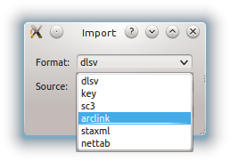
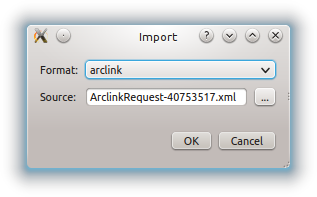
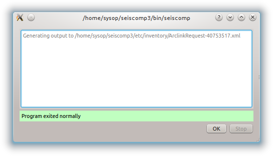
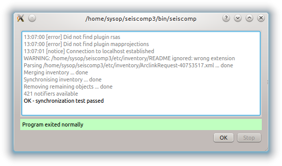

Description
scconfig is a graphical user interface which allows to configure all SeisComP3
modules for which descriptions are provided.
The modules are usually programs part of the SeisComP3 system and have two
distinct types of configuration:
- Modules configuration, or just program configuration (like the scautopick.cfg file).
- Station bindings, that are set of parameters to configure how the module will treat a certain station. I.e. Station specific configurations per module.
The bindings configuration can be done using profiles, or directly per station.
A profile is a named set of parameters for a certain module that can be
attributed for more than one station. Using profiles makes it easiear to
maintain large number of station configuration. When two stations are configured
by the same profile, both will have the same parameter set for a certain module.
scconfig does not know anything about the SeisComP3 database, the only thing it
can do is actually read and write the content of files from etc/ and
~/.seiscomp3 folder and allow you to manage this information in organized
and friendly manner. Also, it relies on other application (like the proper
seiscomp command) to complete the system configuration. The main
tasks that it can handle today are:
- start/stop/check all registered modules
- import station metadata from various sources
- configure modules
- configure module bindings
In the future, it could accumulate more tasks like inventory editor and even
more advanced system monitoring and log inspection.
First start
If scconfig is started for the first time it will ask the user to setup
its new installation.
If done already with the command line interface
this step can be skipped. If the setup has been run already is indicated by
the presence of the file var/run/seiscomp.init.
If pressing yes, the setup wizard will be started and will configure exactly
the same parameters as described in Getting started.
Pressing 'Finish' will run the setup and report the progress.
Pressing 'Close' will launch the main configuration window.
Main Window
The layout of the main window is always the same regardless of what panel
is selected.

Main window of scconfig: mode switch (red), panel selection (yellow),
panel title and description (green),
panel content (blue)
It is divided into 4 areas:
- red: the mode switch (user vs. system)
- yellow: panel switch
- green: title and description of current panel
- blue: the content and interactive screen of the current panel
The main menu contains two entries: File and Edit.
The file menu allows to run the setup wizard (Wizard), to reload
the configuration (Reload), to save the
configuration (Save) and to close the configuration (Quit).
The edit menu allows to switch the current configuration mode. Pressing the
switch button in the upper left corner (red box) is a shortcut for this operation.
System panel
The system panel is a graphical frontend for the seiscomp script.
It is divided into 3 parts: the toolbar on the top (red), the module list (green)
and the log window (blue).
The log window shows the output of all external programs called such as seiscomp.
The standard output is colored black and standard error is colored brown.
Note
Due to the buffering of the GUI it can happen that standard output and
standard error logs are not in perfect order.
The toolbar gives access to the available operations. All operations
will affect the currently selected modules (rows). If no row is selected, all
modules are affected and the corresponding call to seiscomp <arg> is done
without any module.
- Update
- Updates the current module state by calling seiscomp --csv status.
- Start
- Calls seiscomp start.
- Stop
- Calls seiscomp stop.
- Restart
- Calls seiscomp restart.
- Check
- Calls seiscomp check.
- Enable module(s)
- Enables all selected modules for autostart.
At least one module must be selected.
- Disable module(s)
- Disables all selected modules for autostart.
At least one module must be selected.
- Update configuration
- Calls seiscomp update-config. This is important after the
module configuration or bindings have changed and before restarting the
affected modules.
Inventory panel
The inventory panel allows to import and synchronize inventory files. It shows
a list of inventory XML files located in folder etc/inventory. Only
SeisComP3 XML files be used as source for inventory data but various importers
exist to integrate inventory data from other formats. After the first start
the list is empty and contains only a README file.
One source of importing inventory information is ArcLink as run at
http://www.webdc.eu. After downloading the inventory XML file from ArcLink it
can be imported into SeisComP3 by pressing the 'Import' button in the toolbar
on the top.
It will open a popup which allows to select for input format.

If ArcLink is selected, the source location should then point to the ArcLink
XML file downloaded before.

If successfully imported a window will popup with the execution result and
the import output.

After closing the popup the new file will show up in the list.
The toolbar support 3 additional actions:
- Test sync
The inventory XML files are not used directly with SeisComP3. They need to
be synchronized with the database first (see Stations).
Synchronization needs to merge all existing XML files and create differences
against the existing database tables. While merging conflicts can occur such
as duplicate stations with different content (e.g. different description).
This action is a dry-run of the actual synchronisation. It performs merging
and creates differences but does not send any update. This actions is useful
to test all your existing inventory files before actually modifying the
database.

- Sync
- Almost identical to Test sync but it does send updates to the database and
additionally synchronizes key files and resource files.
- Sync keys
This action is part of sync but can be called also standalone. It merges all
inventory XML files and creates key files in etc/key/station_* if a
key file does not yet exist. Existing key files are not touched unless the
station is not part of the inventory anymore.
As a result, all stations in inventory will have a corresponding key file and
each key file will have a corresponding station in inventory.
Sync and Sync keys will cause a reload of the configuration to refresh the
current binding tree (see Bindings panel).
Modules panel
The modules panel allows configuration of all registered modules.
The left/green part shows the list of available modules grouped by defined
categories and the right/blue part shows the current active module configuration.
The active configuration corresponds to the selected item in the list. See
section Editing for further information about the content panel.
Bindings panel
The binding panel configures a station for a module.
It is separated into 3 main areas: the station tree (red + orange), the
binding content (green) and the module tree (blue + magenta).
The station tree (red) shows a tree of all available networks and their
stations. Each stations contains nodes of its configured bindings. The lower
view (orange) represents the content of the currently selected item in the
station tree.
The binding content shows the content of a binding and is similar to the
module configuration content. See section Editing for further
information about this panel.
The module tree contains all modules which can be used along with bindings.
The upper/blue window contains the modules and all available binding profiles
for each module and the lower/magenta part shows all binding profiles of the
currently selected module. This view is used to add new profiles and delete
existing profiles.
Station bindings
To create an exclusive station binding for a module, it must be opened in the
binding view (orange box) by either selecting a station in the station tree
(red) or opening/clicking that station in the binding view (orange). The
binding view will then contain all currently configured bindings.
Clicking with the right mouse button into the free area will open a menu which
allows to add a binding for a module which has not yet been added. Adding
a binding will activate it and bring its content into the content panel.
To convert an existing profile into a station binding, right click on the
binding icon and select . The existing
profile will be converted into a station binding and activated for editing.
Profiles
To assign a binding profile to a station, a network or a set of stations/networks,
drag a profile from the right part (blue or magenta) to the left part (red or
orange). It is also possible to drag and drop multiple profiles with one action.
Editing
The content panel of a configuration is organized as a tree. Each module/binding
name is a toplevel item and all namespace are titles of collapsible sections.
Namespaces are separated by dot in the configuration file, e.g.: scautopick.cfg
which also reads global.cfg would end up in a tree like this:
+ global
| |
| +-- connection
| | |
| | +-- server (global.cfg: connection.server)
| | |
| | +-- username (global.cfg: connection.username)
| |
| +-- database
| |
| +-- service (global.cfg: database.service)
| |
| +-- parameters (global.cfg: database.parameters)
|
+ scautopick
|
+-- connection
| |
| +-- server (scautopick.cfg: connection.server)
| |
| +-- username (scautopick.cfg: connection.username)
|
+-- database
|
+-- service (scautopick.cfg: database.service)
|
+-- parameters (scautopick.cfg: database.parameters)
Figure Content panel layout describes each item in the content
panel.
The content of the input widget (except for boolean types which are mapped
to a simple checkbox) is the raw content of the configuration file without parsing.
While typing a box pops up which contains the parsed and interpreted content as
read by an application. It shows the number of parsed list items, possible
errors and the content of each list item.
Each parameter has a lock icon. If the parameter is locked it is not written
to the configuration file. If it is unlocked, it is written to the configuration
file and editable. Locking is similar to remove the line with a text
editor.
The configuration content that is displayed depends on the current mode. In system
mode etc/<module>.cfg is configured while in user mode it is
~/.seiscomp3/<module>.cfg.
It may happen that a configuration parameter is editable but will not have any
affect on the module configuration. This is caused by the different configuration
stages. If the system configuration is active but a parameter has set in the
user configuration it cannot be overriden in the system configuration. The user
configuration is always of higher priority. scconfig will detect such problems
and will color the input widget red in such situations.
The value in the edit widget will show the currently configured value in the
active configuration file but the tooltip will show the evaluated value, the
location of the definition and a warning.